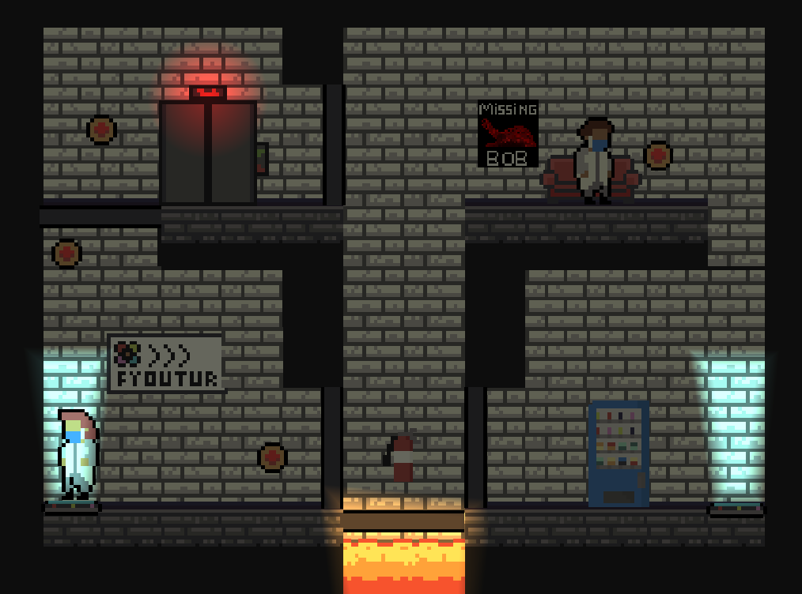
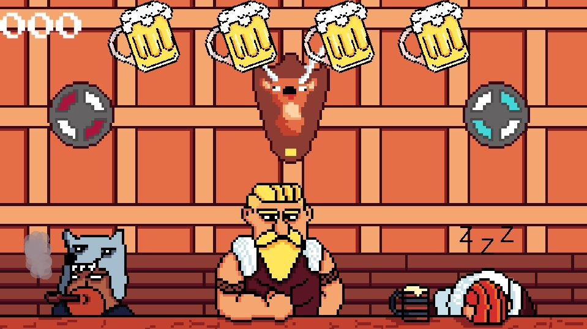

This is such a cool mechanic!
The player feedback is incredible,
and I really loved the addition of the post-processing and lighting effects!
Especially for your first game jam entry, this is an incredible project!
Massive congrats to you - loved it! :D
Great mechanic, smooth gameplay, great level design and art/music. 10/10
This game is honestly fun, I wish I had longer then 3 days to live.
It'd be nice to play with someone else.
Also I think the characters should have more of a difference between them.
I get the controls confused sometimes.